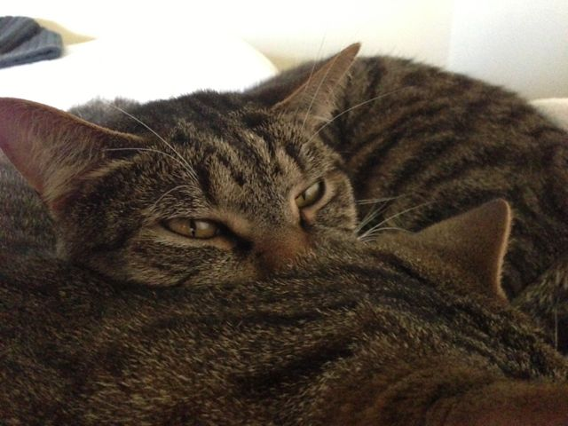
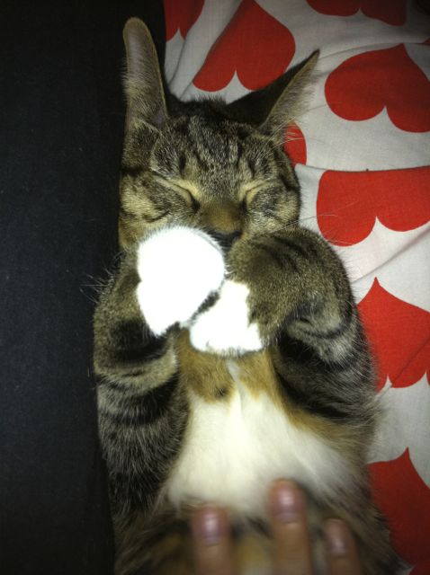

A pair of Lovely Indoor Tabbies
Vala & Tealc we need a great forever home. We are a best friends, brother and sister duo with plenty of love to give to you too! We are so easy going and keep each other company when you aren't home.
We don't bite or scratch. Already litter box and house trained. We are 4 years old and still like to play but are out of our naughty kitten stage making us a pleasure. We have lived as indoor only cats with an outdoor enclosure at times - so would need time to adjust if you plan on letting us outside or consider going indoor as it saves you a fortune on vet bills and keeps us safe.

We are well travelled cats and have had many a holiday with different people when our carers are away. Easy going around other children, people, animals, cats, dogs & birds. We are already vaccinated, microchipped, desexed, flea less and up to date with our worming. We come with all our paperwork.
We are from little paws kitten rescue qld group and our foster carer cannot keep caring for cats as she is sick. We were from a litter of 6 abandoned in a box and surprisingly the last two to find the perfect home even though our carer certainly thinks we are the pick of the litter! Why not come meet us or give us a trial to see if we are good match for each other?
Please tweet me if your interested in giving us a forever home.